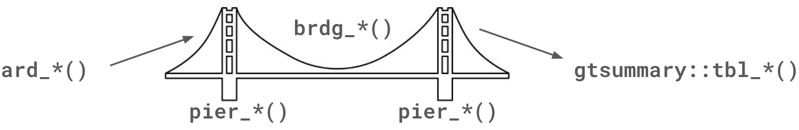

{gtsummary} Overview
Background
The {gtsummary} package was born from my previous team’s migration to R. I had written utilities in Stata to improve our reporting workflow, and due to the migration, I needed to provide R utilities.
The design of {gtsummary} comes from:
My experience publishing 250+ academic research manuscripts.
Serving as Statistical Editor for European Urology journal (highest-impact journal in the field).
Having authored the original reporting guidelines for European Urology. Guidelines that have subsequently adopted by 7 other academic journals.
Anyway, I’ve spent a significant amount of time thinking about statistical reporting!
The {gtsummary} package has grown in scope immensely since the first internal version written for my team. It is now the most downloaded package for summary tables in the entire R ecosystem with hundreds of thousands of users.
Years ago, when we first got 200 downloads in one month, I wrote a chron job to report the monthly downloads relative to other packages.
The implications of being a widely used package is that we must be extremely cautious and thoughtful about any breaking changes!
Future
The {cards} package does not present results and this is where the {gtsummary} package shines. The {gtsummary} package offers a modular framework to construct summary tables. The {gtsummary} package is the most widely used package for summary tables in the R ecosystem, and won the American Statistical Association’s 2021 award for Innovation in Statistical Programming and Analytics and it’s currently being refactored with a {cards} backend.
After the update, ARDs will play two important roles in a {gtsummary}.
An ARD will be a byproduct of every {gtsummary} tables created.
The package will also support an ARD-first approach, ingesting the ARD and returning a {gtsummary} table.
ARD to Table
The graphic below illustrates quite generally the approach we’ll take converting an ARD object created with {cards} to a {gtsummary} table.
brdg_*(): Bridge functions take the ARD data frame and create the {gtsummary} table. Primarily, this involves creating the underlying.$table_bodydata frame that is printed as the table.pier_*(): Piers support bridges, and these functions do the same by supporting bridge functions. For example, atbl_summary()table generally is comprised of continuous, categorical, and dichotomous summaries. Each of these types has an associatedpier_*()function to tidy those results, and thesepier_*()functions are called by thetbl_summary()brdg_*()function.
Both the bridge and pier functions can be generalized to support other reporting needs. For example, brdg_summary() constructs the tbl_summary() output from the ARDs, and this will require only a small amount of generalization to support tbl_svysummary() and more.
